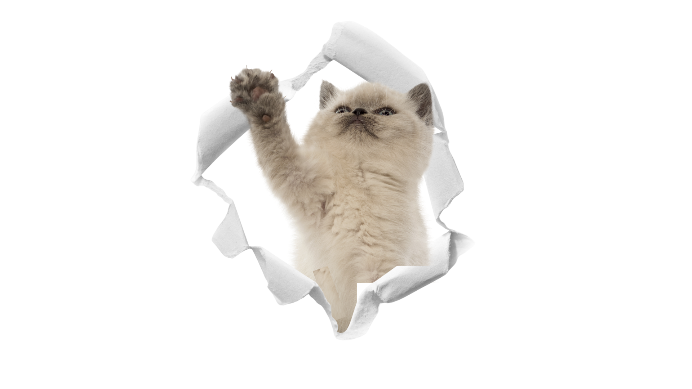

Animal abuse? What's that?
As formally defined by the Spokane County (n.d.), "Animal Cruelty is defined as depriving an animal of food, water, shelter, and/or veterinary care. Torturing, maiming, or killing animals is also animal cruelty". In simple words, the act of animal cruelty harms animals and disrupts their daily living.
Common instances of animal abuse...
Everyday, animal abuse happens without people noticing it. Some occurences might be in a simple manner such as people not feeding their "beloved" pet/s, and some occurences might be in a more vile manner such as harming the animal, turning it into a "circus" pet or for display, and even testing the animal for experiments and products.
How do we solve this?
Raising awareness is the first step towards combating animal cruelty. Community outreach programs can educate pet owners about proper care and the responsibilities that come with pet ownership. Additionally, advocating for stricter laws and regulations regarding animal treatment can help protect vulnerable animals
That's why CAT is here!
CAT (Call for Animal Treatment) is dedicated to fighting against animal cruelty and promoting the humane treatment of animals. We conduct educational workshops and seminars to inform the public about the signs of animal abuse and how to report it. Our organization collaborates with local shelters and veterinary clinics to provide resources for pet owners, including food, shelter, and medical care for animals in need.
We also organize community events such as adoption drives, fundraising activities, and volunteer opportunities to engage the public in our mission. By fostering a community of compassionate individuals, we aim to create a safe and loving environment for all animals. Together, we can make a difference and ensure that every animal is treated with the care and respect they deserve.